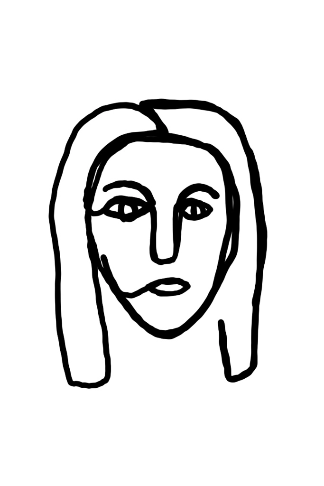

Portrait Challenge
Nov 19 - Written by Bonnie and Emily
Having recently gotten ourselves IPads and Procreate, we thought we’d put our drawing skills to the test by drawing portraits of one another.
Of course we had to put a spin on it to keep us on our toes! Instead of creating the usual realistic portraits you’d expect, we decided to challenge ourselves and do 5 different portraits with various challenges and restrictions that each had to be completed within 5 minutes.
The Challenges
- Single Line Portrait
- No Looking Portrait
- Abstract Brush Portrait
- Cartoon Portrait
- Nondominant Hand Portrait
Challenge #1

We started off easy by creating a portrait with a single line. In other words, we had to draw the other person using only one stroke, the second we lifted our pens, it was game over, the portrait is done. Unlike all the aesthetic single line portraits out there, ours weren’t as clean or accurate but they definitely showed personality. This was definitely a great challenge for all levels of drawing skills and you’ll never know what creative way you might use to complete your drawing!
Challenge #2
Now if you think that was a disaster, take a look at our next portraits that we drew without looking at our screens. These were probably our least accurate drawings since all our facial features were all over the place but what’d you expect? On the bright side, we at least drew all the facial features -- and a few extra eyebrows just in case. The funniest part is when you finally get to take a look at what kind of abstract drawing you created and get all the questions you were asking while you drew answered.
Challenge #3
As new users of Procreate, we haven’t yet explored the plethora of brushes available so we took this opportunity to do so. We went with the abstract brushes because it was one of the more unique options available and we wanted to dig deep into our creative sides. We had a feeling we might be able to get some very interesting portraits considering how whacky all the different brushes are. From Peppa Pig vibes to Coraline, we really took these portraits in fairly fun and different directions.
Challenge #4
Since we’ve lived in NYC for a while, we’ve always seen all the artists outside drawing caricatures for people and we wanted to have one done for ourselves too. But since we didn’t get the opportunity to do so, we thought it’d be fun to give it a try ourselves and reimagine the other person as a cartoon. These were probably our most successful drawings as we each captured each other’s characteristics, from all of Emily’s hair to Bonnie’s fish, Bubba.
Challenge #5
Although we each have our own unique characteristics, being ambidextrous isn't one of them. So, as we are both right handed, we decided to give ourselves a new challenge and attempt to draw with our left hands and see what happens. We had in mind that this challenge was definitely going to be a difficult one but the results were some surprisingly nice drawings--of course featuring very squigly shaky lines and generic looking faces.
Since we had such a great time sharing our drawings with each other, we decided to make things a little more interesting. We were curious which drawings our friends liked so we let some of them vote for their favorite drawing! The person who got the least number of votes promised to change their Instagram profile picture to one of the portrait drawings the other made.
If you’re ever looking for something fun to do and want to change up the activities with your friends, try some of these challenges out! We’ve found that it's great during these quarantine times because you can enjoy it virtually wherever you are!
*IPad and Procreate not required*